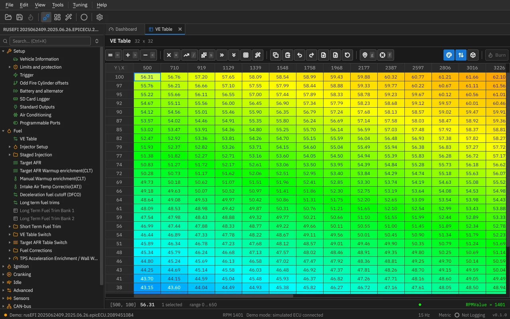

Table and curve editing
Heat-mapped VE, ignition and AFR tables with 3D view, smoothing, interpolation, scaling, copy/paste, undo, and live-cell follow.
Open-source ECU tuning · v0.1.0
LibreTune is INI-driven tuning software for rusEFI, Speeduino and MegaSquirt-style ECUs. This edition is a from-scratch rewrite in portable C: no installer, no runtime, no third-party libraries. Download it, run it, and start editing tables.

Reads the same ECU definition (INI) files your firmware already ships, so menus, tables and gauges match your ECU.
Heat-mapped VE, ignition and AFR tables with 3D view, smoothing, interpolation, scaling, copy/paste, undo, and live-cell follow.
Builds VE corrections from live data or a replayed log, with cell locking, per-region health scores and a session report.
Analog and bar gauges, indicator panels, and a dashboard designer. Smooth 60 Hz refresh.
Record any of the ECU's output channels, add markers, then play logs back through the dashboards and AutoTune.
Demo mode runs a simulated engine in-process. Try every feature with no hardware connected.
Native windows on X11, Cocoa and Win32, plus a local web UI and a full terminal UI, all from the same binary.
Keep tunes, logs and dashboards together in a project, with tune history and restore points to roll back a bad change.
Builds warning-free with any C compiler from C89 to C2x. Its own TrueType renderer, HTTP server and XML parser.
All captured from the demo mode of the current build.

32 x 32 VE table with heat map, live-cell tracking and the full editing toolbar.
Single-file builds of the latest release. Nothing to install.
libretune-linux-x86_64
LinuxARM64 / Raspberry Pi
libretune-linux-aarch64
Windowsx86-64
libretune-windows-x86_64-gui.exe
macOSIntel + Apple Silicon
libretune-macos-universal
Also: demo.ini (for demo mode) · Windows console build · SHA256SUMS · Nightly build · All releases
Download demo.ini next to the binary and start the simulator:
# Linux / macOS
chmod +x libretune-*
./libretune-linux-x86_64 --demo --ini demo.ini
# Windows
libretune-windows-x86_64.exe --demo --ini demo.inixattr -dr com.apple.quarantine libretune-macos-universal once.-gui build opens without a console window; use the console build for --help.--backend or LT_BACKEND: x11, cocoa, win32, web, tty.Any C compiler, C89 or newer. Nothing else to install.
| OS | Command | Output |
|---|---|---|
| Linux / BSD | ./build.sh app | build/libretune |
| macOS | ./build.sh app | build/libretune |
| Windows, MSVC | build.bat | build\libretune.exe |
| Windows, MinGW | TARGET=windows CC=x86_64-w64-mingw32-gcc ./build.sh app | build/libretune.exe |
git clone https://github.com/v3ai/clibretune
cd clibretune
./build.sh test # build and run the test programs
./build.sh app # build the applicationMore in the README, architecture notes and Universal C standard.